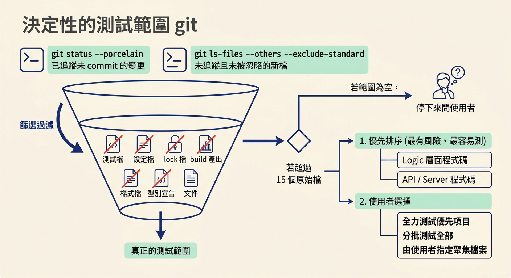
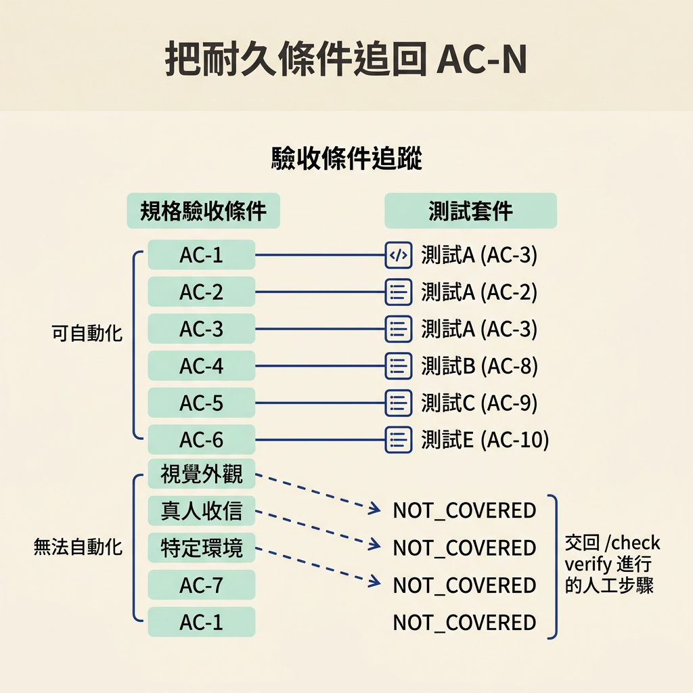
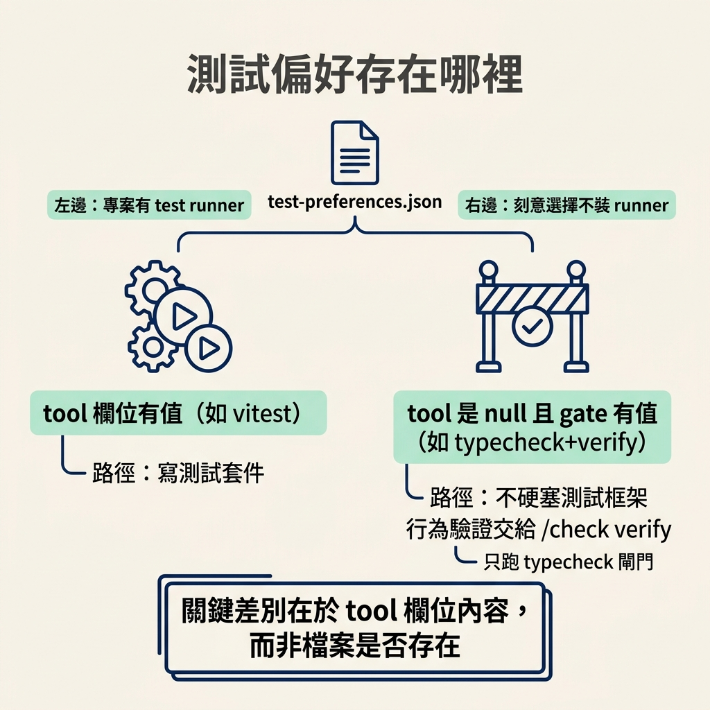

說出 test skill 只測這條 branch 上尚未 commit 的變更、依檔案類型挑測試策略、把可自動化的耐久條件追到 AC-N，並拒絕替 scaffolding 上鎖。
上一節你親眼看著 check verify 把功能跑起來、留下證據、一條條蓋章。那一刻的證明是真的，但它只描述了「今天」。你接下來要做的下一個功能，很可能動到同一段程式；如果它不小心踩壞了舊行為，現在這個證明幫不上忙——沒有東西會跳出來告訴你。
把一次性的證明，變成「以後每次改動都會被守住」的保護，就是 test 這個 skill 的工作。它有兩個地方特別容易被誤解。第一，它一開始不會問你「想測什麼」，而是自己從 git 的工作區裡把範圍算出來；第二，它不是看到檔案就套同一種測試，而是先分類、再挑策略。這一節先把這兩個判斷看明白，下一節才真的動手跑它。
很多測試工具一開頭就丟問題給你：「要測哪個資料夾？」test 不這樣做，因為範圍有更誠實的來源：這條 branch 上、還沒 commit 的變更。它用幾個指令就能算出來：
- Tracked (staged + unstaged), excluding deletions: `git diff --name-only --diff-filter=ACMR HEAD` - Untracked, and not ignored: `git ls-files --others --exclude-standard`
第一行抓的是「已追蹤但還沒 commit」的變更（新增、複製、修改、改名，排除刪除），第二行抓的是「還沒被追蹤、也沒被忽略」的新檔案。兩者合起來去掉重複，就是這次要處理的範圍。
接下來它會把不該測的檔案濾掉：測試檔本身、設定檔、lock 檔與產生出來的 build 輸出、樣式檔、型別宣告，以及文件與 test-preferences.json。剩下的才是 scope。之所以不問你，是因為 git 工作區就是最直接的答案——你剛剛改了什麼，那裡就是最該補測試的地方。它唯一的例外是範圍「空的時候」：沒有未 commit 的變更，它會問你要不要測最後一個 commit、指定某些檔案，或現在先不測。
如果濾完之後還剩超過十五個原始檔，它不會硬幹。它會先依類型排優先順序——logic 與 api/server 最有風險、也最容易測得好——再問你要先全力測這些、分批全部測完，或由你指定要聚焦的檔案。

範圍定好之後，它會只憑路徑與檔名，先替每個檔案歸類。這一步刻意做得便宜，不把檔案讀進來；真的難以判斷時，就先標成 logic，等寫測試時讀了檔案再重新標一次。分類表是固定的：
| Signals in path / filename | Class | Test strategy | |---|---|---| | `*.tsx`/`*.jsx`/`*.vue`/`*.svelte` not under a route/page path | **component** | Component test (render + interact + assert DOM/ARIA) | | `app/**/page.*`, `pages/**` (not `pages/api`), `*Screen.*`, `*View.*` | **page/flow** | E2E candidate + component test of pieces | | `app/**/route.*`, `pages/api/**`, `*.controller.*`, `*.handler.*`, `*.resolver.*`, `actions.*` | **api/server** | Integration test (call handler, mock at boundary) | | Plain `.ts`/`.js`/`.py`/`.go`/`.rs`, utils, hooks, services, domain logic | **logic** | Unit test (inputs → outputs, edge cases, errors) | | `cli.*`, `bin/**`, `*.command.*`, `cmd/**` | **cli** | Integration test invoking the command |
這張表決定了每個檔案該用哪種測試。logic 是純函式：餵真的輸入、斷言輸出，把邊界與錯誤情況盡量覆蓋，只在真正的邊界（網路、檔案系統、時鐘、隨機）才 mock。component 是渲染元件、用使用者事件互動、斷言使用者看到什麼，而不是斷言內部 state 或 class 名稱。page/flow 是頁面流程，有 E2E 工具就寫一條真實瀏覽器的主流程加上一條失敗路徑，同時把頁面裡不簡單的零件也做元件測試。api/server 是整合測試：呼叫 handler 或 route，斷言 status、回應形狀與錯誤回應，只在資料庫與外部服務的邊界 mock。cli 則是實際帶參數執行指令，斷言 stdout、exit code 與副作用，也要涵蓋參數錯誤的路徑。
分類也決定了它「不會做」的事：它不會替一個純邏輯檔硬塞瀏覽器測試，也不會替一個 UI 元件只斷言內部變數。demo 裡那句話說得很直白——comment 的邏輯拿到單元測試，endpoints 拿到整合測試，thread 元件則被渲染之後，用「人會怎麼操作它」的方式驅動。
AC-N如果這次變更有一個對應的 spec，test 會讀它的驗收條件，把「可以被自動化、而且是耐久行為」的那些寫成測試，而且每個測試都標上它守的是哪一條 AC-N——例如在測試標題裡帶上 AC-3，或加一行 covers: AC-3。這樣一來，測試套件就對得上合約，而不只是一堆鬆散的檢查。
反過來，有些驗收條件天生無法自動化：視覺外觀、需要真人收到一封信、或需要特定環境。遇到這種，它不會硬掰一個假的測試來交差，而是記進 NOT_COVERED，寫明原因，交回給 /check verify 的人工步驟處理。這是它對「測試」這件事的誠實邊界。

不是所有看起來「該有測試」的東西都值得測。如果這個 slice 目前還刻意用假資料或佔位實作（scaffolding），那它本來就會一直變；把當下的樣子鎖成斷言，只是製造未來的假失敗。所以 test 會拒絕替這種還在變的東西上鎖，也不會去斷言一個計畫上還沒真正做好的實作。
判準是「這條 slice 承諾要做出真的行為」：真正承諾要上線的行為，才值得被斷言守著；刻意先做假的佔位，就留著讓它變。這也呼應了工作流程裡「build approach 決定這條 slice 要做到多真」的那套校準方式。
test 每次都會先讀專案根目錄的 test-preferences.json，用來決定要不要寫測試套件、用什麼工具。這份檔案有兩種形狀。第一種是專案有跑測試的工具：
{
"tool": "<unit framework>",
"gate": null,
"additionalTools": ["@testing-library/react"],
"e2eTool": "<playwright|cypress|none>",
"testDir": "<conventional dir for the tool>",
"filePattern": "<*.test.ts>",
"packageManager": "<npm|pnpm|yarn|bun>"
}
第二種，是專案刻意不裝 test runner，改用 typecheck／lint 當閘門：
{
"tool": null,
"gate": "typecheck+verify",
"packageManager": "<npm|pnpm|yarn|bun>"
}
關鍵差別在 tool 這個欄位。如果它是一個工具名稱，代表專案有 runner；如果它是 null 而 gate 有值，代表這是一個「刻意選擇不裝 runner」的專案，test 就不會硬塞一套測試框架給你，只會跑它的 typecheck 閘門，行為則交給 /check verify。這也是為什麼它判斷的是 tool 這個欄位的內容，而不是「這個檔案存不存在」。

test的範圍由 git 決定：只測這條 branch 上還沒 commit 的變更，再濾掉測試檔、設定、lock、產出物、樣式與文件。剩下的檔案先依路徑歸類成 component／page-flow／api-server／logic／cli，再依類型挑對應的測試策略。若這次變更有對應的 spec，它會把可自動化的耐久條件寫成測試並追到AC-N，無法自動化的就記進NOT_COVERED。它拒絕替還在變的 scaffolding 上鎖，也會先讀test-preferences.json決定要不要寫測試套件、用什麼框架。
看懂它掃什麼、怎麼分類之後，下一節要真的跑一次 test：讓它把測試寫出來、跑到 green，把測試檔與偏好檔留在專案裡，讓下一次改動有東西可以幫你踩剎車。